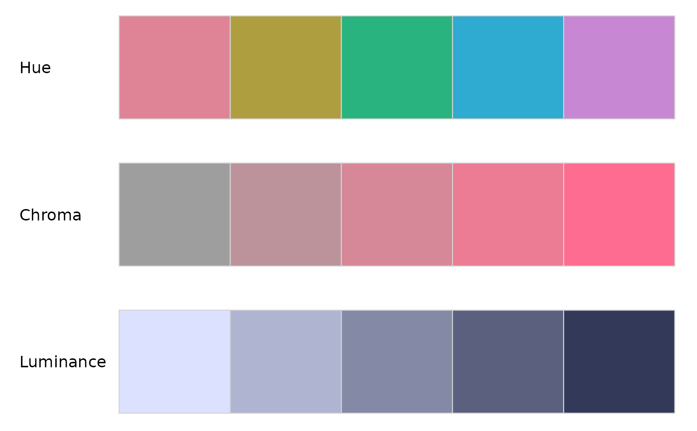
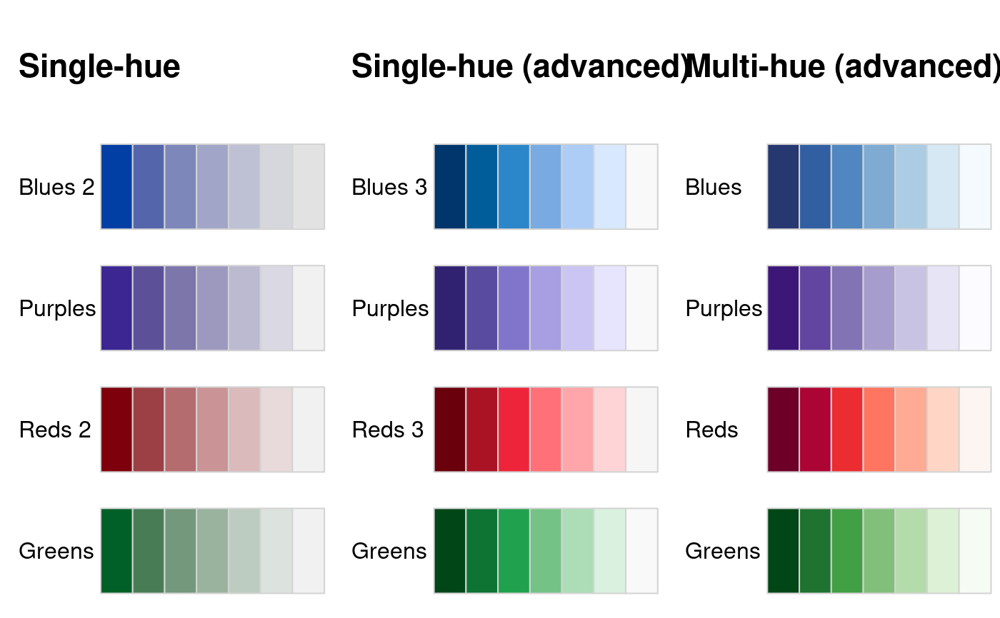

swatchplot.RdVisualization of color palettes in columns of color swatches.
swatchplot(x, ..., nrow = 20, border = NULL, sborder = NULL, off = NULL, mar = NULL, line = NULL, cex = NULL, font = 1:2)
| x | character vector/matrix (or list of character vectors/matrices) containing color hex codes. |
|---|---|
| … | further (possibly named) character vectors/matrices with color hex codes. |
| nrow | integer specifying the maximal number of rows of swatches. (The actual number might be lower in order to balance the rows used in each column.) |
| border | color for border of individual color rectangles. By default
|
| sborder | color for border of the entire palette swatch. By default
|
| off | numeric vector of length 2. Offset in horizontal and vertical direction
(specified as a fraction of the rectangle for one color). By default, the
horizontal offset is |
| mar | numeric vector of length 4, specifying the margins of column of color swatches. |
| line | numeric. Line in which the palette names (if any) are printed in the margin. |
| cex, font | numeric vectors of length 1 or 2. Specifications for the annotation text for the individual palettes and lists of palettes, respectively. |
swatchplot invisibly returns a matrix with colors and annotations.
The function swatchplot is a convenience function for displaying
collections of palettes that can be specified as lists or matrices of
character color specifications. Essentially, the function just calls
rect but the value-added are the heuristics used
for choosing default labels, margins, spacings, borders. These are selected
to work well for hcl_palettes and might need further tweaking
in future versions.
## swatches of several palette vectors swatchplot( "Hue" = sequential_hcl(5, h = c(0, 300), c = c(60, 60), l = 65), "Chroma" = sequential_hcl(5, h = 0, c = c(100, 0), l = 65, rev = TRUE, power = 1), "Luminance" = sequential_hcl(5, h = 260, c = c(25, 25), l = c(25, 90), rev = TRUE, power = 1), off = 0 )## swatches of named palette matrices bprg <- c("Blues", "Purples", "Reds", "Greens") swatchplot( "Single-hue" = t(sapply(paste(bprg, 2), sequential_hcl, n = 7)), "Single-hue (advanced)" = t(sapply(paste(bprg, 3), sequential_hcl, n = 7)), "Multi-hue (advanced)" = t(sapply(bprg, sequential_hcl, n = 7)), nrow = 5 )